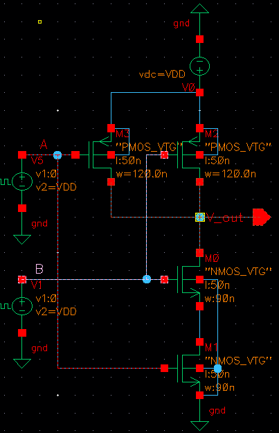
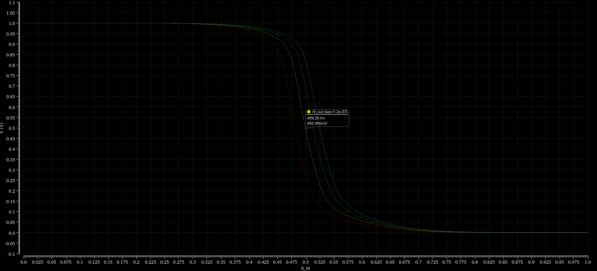

04
CMOS NAND Gate
Class project · CSE 112 Electronic Devices and Circuits
- Course
- CSE 112
- Term
- Fall 2025
- Technology
- 45 nm CMOS
- Tools
-
- Cadence Virtuoso
- FreePDK 45 nm
- Parametric analysis
For my CSE 112 class project, I designed, simulated and analyzed a CMOS NAND gate in Cadence Virtuoso using the FreePDK 45 nm technology. The project covered transistor-level circuit design, sizing the transistors so the gate switches symmetrically, and how its timing changes with operating conditions.

Project stages
- Functional verification Built the transistor-level schematic and drove both inputs with square pulses, one at twice the period of the other, so all four input combinations (00, 01, 10, 11) occur in one cycle. Checked the output against NAND logic.
- Optimization Plotted the voltage transfer curve and used Virtuoso's parametric analysis to tune the PMOS and NMOS widths, balancing the different mobilities of holes and electrons so the transition is centered around VDD/2.
- Performance analysis Measured propagation delay, the average of tpHL and tpLH, across supply voltages from 0.8 V to 1.2 V and across temperatures from 0 °C to 90 °C.
Optimization result
